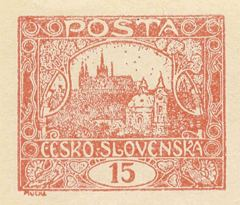
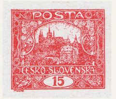
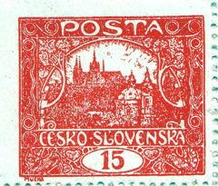
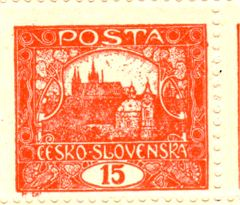
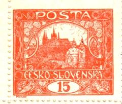
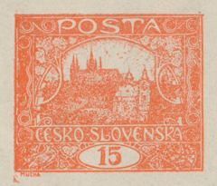

Galerie známkových políStamp-field gallery
Referenční knihovna všech pozic 15h hodnoty: 7 desek × 100 známkových polí = 700 obrazů, registrovaných na červený rám kresby. Kliknutím na desku otevřete kompletní přehled; každé pole lze zvětšit a listovat šipkami.The reference library of all 15h positions: 7 plates × 100 stamp fields = 700 images, registered on the red frame of the design. Click a plate for the complete overview; every field can be enlarged and browsed with arrow keys.

Tisková deska IPrinting plate I

Tisková deska IIPrinting plate II

Tisková deska IIIPrinting plate III

Tisková deska IVPrinting plate IV

Tisková deska VPrinting plate V

Tisková deska VIPrinting plate VI
